15 Ianuarie 2026
Top 5 Tendințe în Renovări pentru 2026
Descoperă cele mai noi tendințe în design interior și renovări care vor domina anul acesta...
În curândSpecializați în renovări premium, hidroizolații și instalații sanitare, finisaje interioare de excepție
Soluții complete pentru proiectul dumneavoastră de construcție
Transformăm spații vechi în locuințe moderne și funcționale, cu atenție la fiecare detaliu.
Finisaje premium pentru pereți, podele, tavane - de la gresie și faianță la parchet și tencuieli decorative.
Hidroizolații complete pentru băi, terase, subsoluri și fundații - protecție eficientă împotriva umidității și infiltrațiilor.
Sisteme complete de apă și canalizare, instalații termice, centrale, boilere și climatizare.
Montaj și renovare acoperișuri, jgheaburi, burlane, hidroizolații și sisteme de protecție.
Mobilier la comandă și amenajări personalizate pentru fiecare spațiu, cu atenție la detalii și funcționalitate.
Proiecte finalizate cu succes - înainte și după

Transformare completă apartament - bucătărie deschisă, finisaje premium și mobilier la comandă
Renovări
De la demolare la instalații sanitare, hidroizolație și faianță premium bicromă, cu oglindă LED și mobilier suspendat
Finisaje
Holuri cu mozaic premium, profile decorative la tavan și corpuri de iluminat artizanale
Renovări
Instalare centrală termică Viessmann, distribuție nouă și branșamente conforme normelor
Sanitare
Design modern cu mobilier la comandă, blat de lemn și electrocasnice încastrate Bosch
FinisajeDe la structura decopertată până la ultimul detaliu de finisaj — parcursul complet al unui proiect, în imagini reale de pe șantier.
Peste 130 de fotografii reale din proiectele Salinas Construct - șantiere, faze de lucru și finisaje finalizate
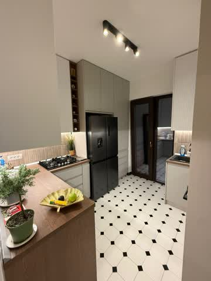
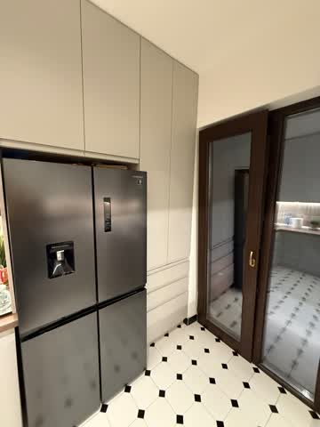
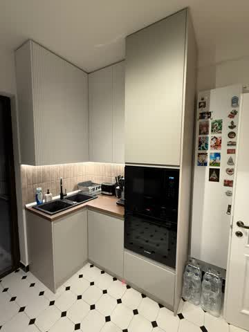
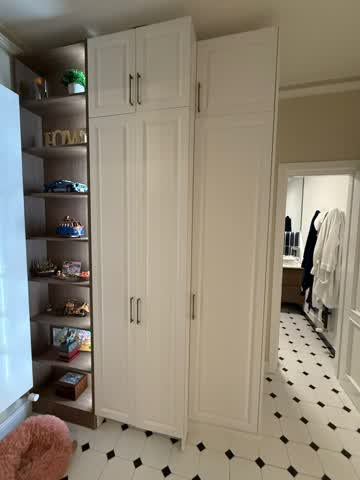
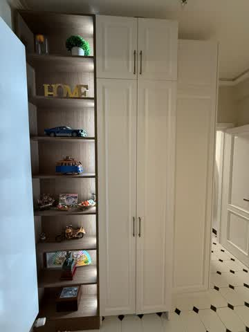
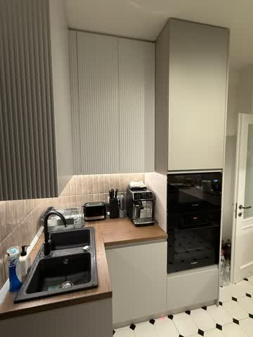
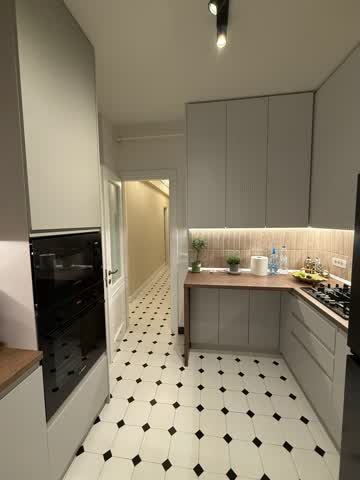
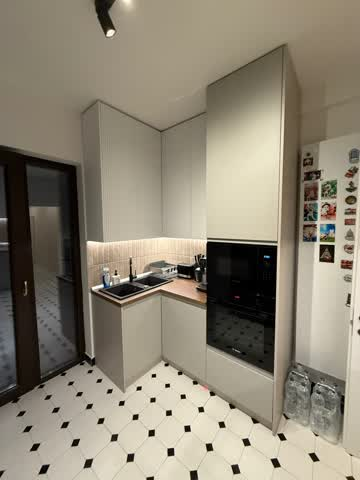
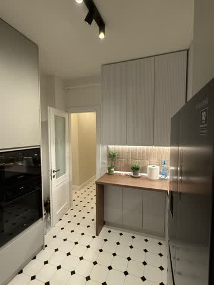
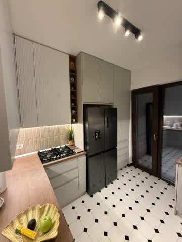
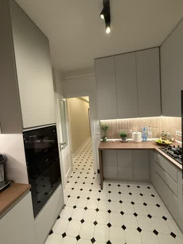
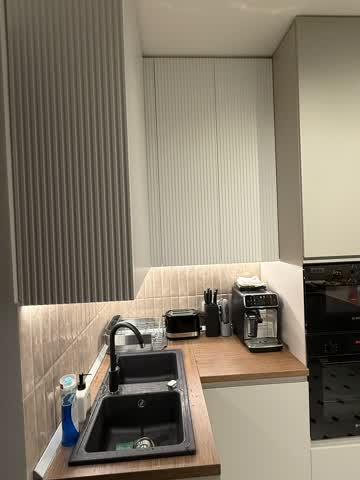
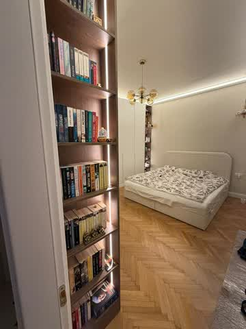
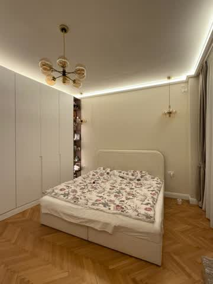
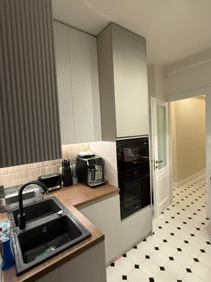
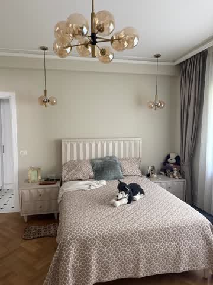
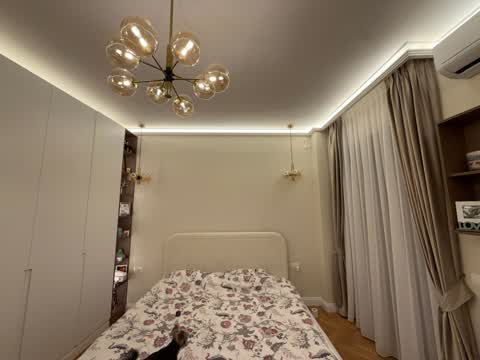
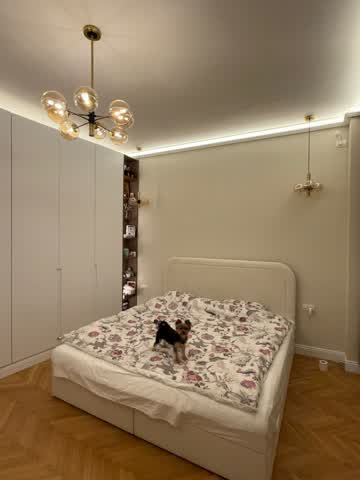
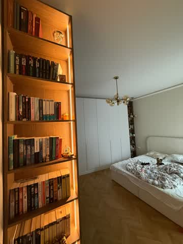
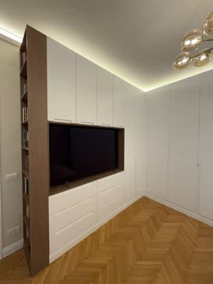
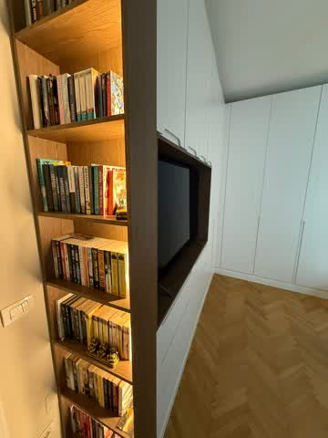
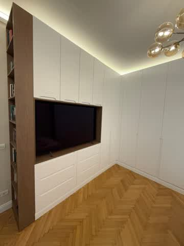
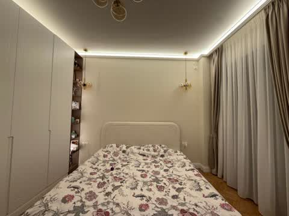
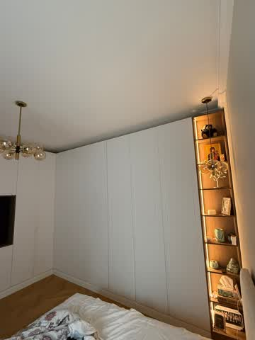
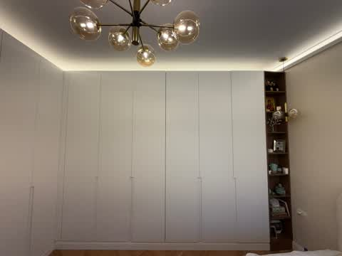
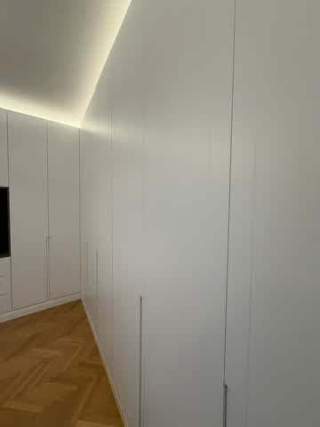
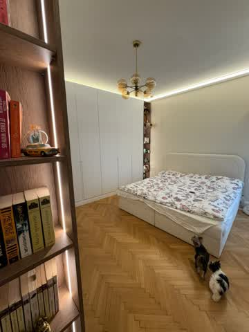
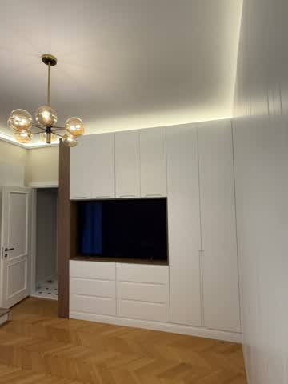
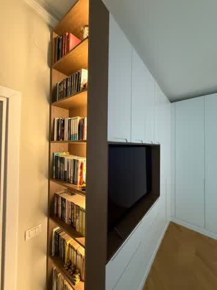
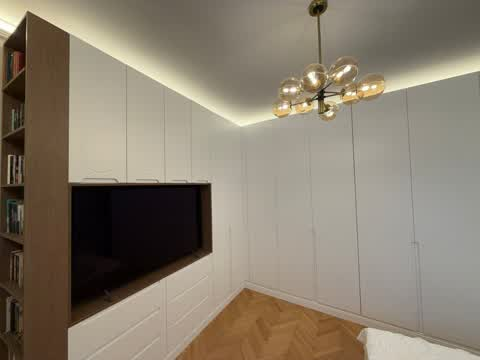
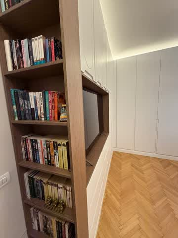
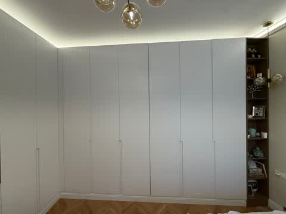
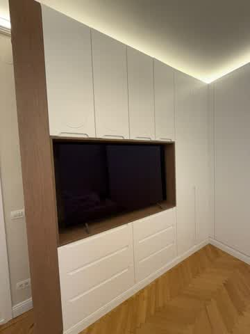
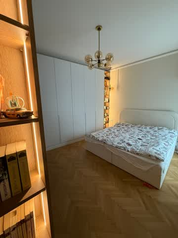
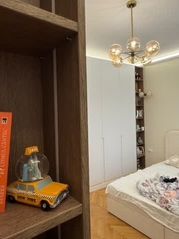
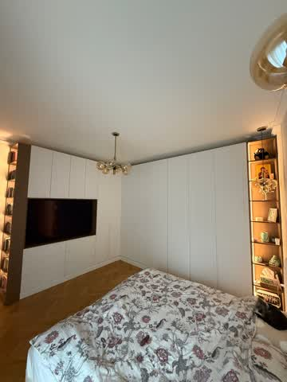
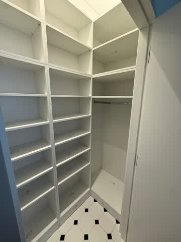
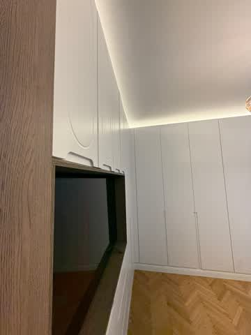
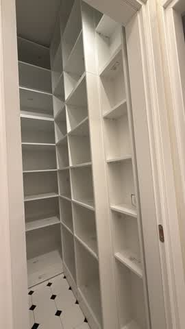
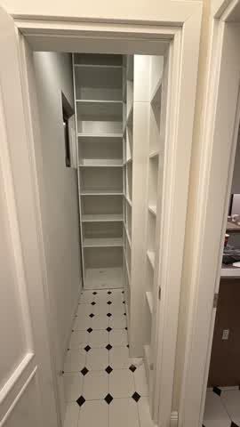
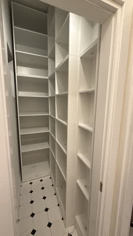
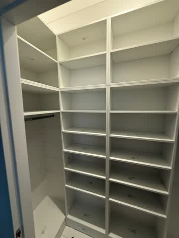
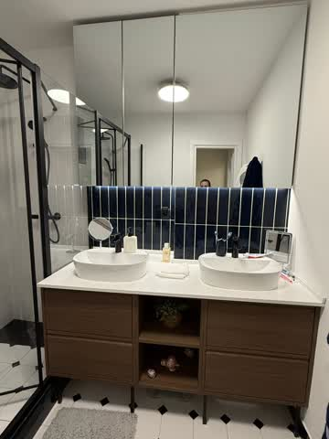
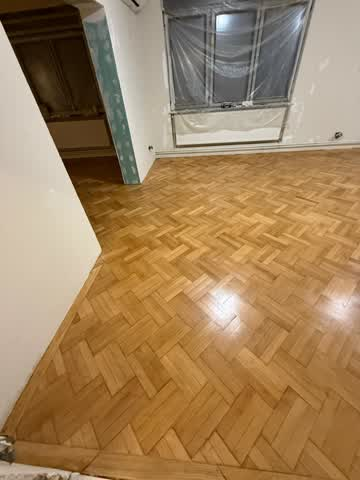
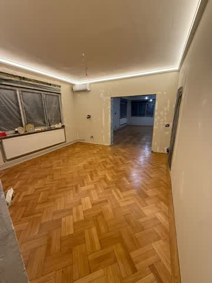
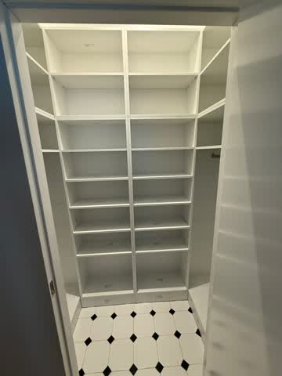
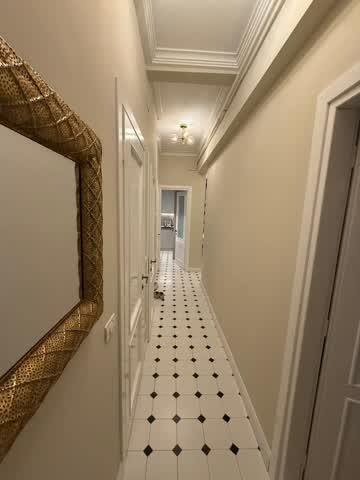
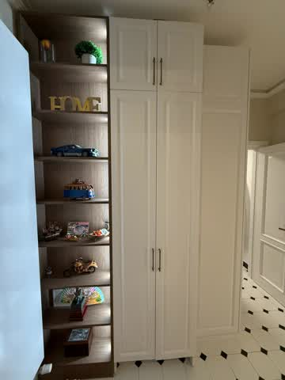
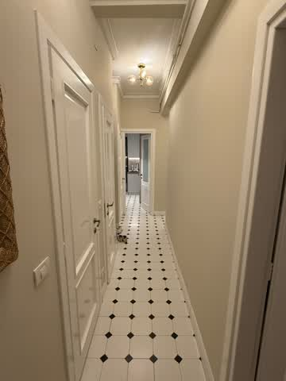
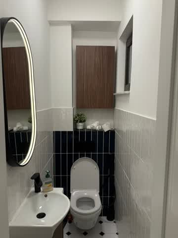
Suntem o echipă de profesioniști dedicați transformării spațiilor în locuințe moderne, funcționale și de calitate superioară.
Cu experiență vastă în domeniul construcțiilor și renovărilor, oferim servicii complete - de la proiectare la finisare, cu accent pe calitate, punctualitate și satisfacția clientului.
Proiecte Finalizate
Ani Experiență
Clienți Mulțumiți

O afacere de familie, condusă cu pasiune și implicare directă în fiecare proiect
Fondator & Director General
Asociat
Asociat
Ultimele proiecte, tendințe și sfaturi din domeniul construcțiilor
Descoperă cele mai noi tendințe în design interior și renovări care vor domina anul acesta...
În curând
Ghid complet pentru selectarea materialelor de calitate care să reziste în timp...
În curând
Descoperă cum sistemele inteligente pot reduce costurile și crește confortul...
În curândSuntem aici pentru a transforma visul dumneavoastră în realitate
Str. Constructorilor nr. 45
București, Sector 2, România
+40 721 234 567
+40 732 345 678
office@salinasconstruct.ro
contact@salinasconstruct.ro
Luni - Vineri: 08:00 - 18:00
Sâmbătă: 09:00 - 14:00